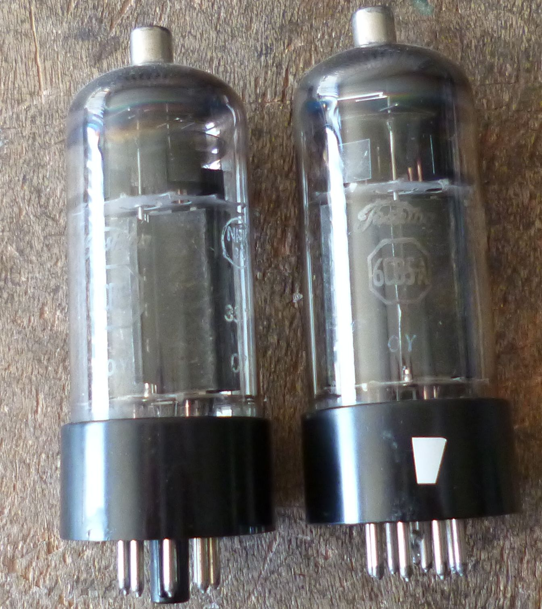
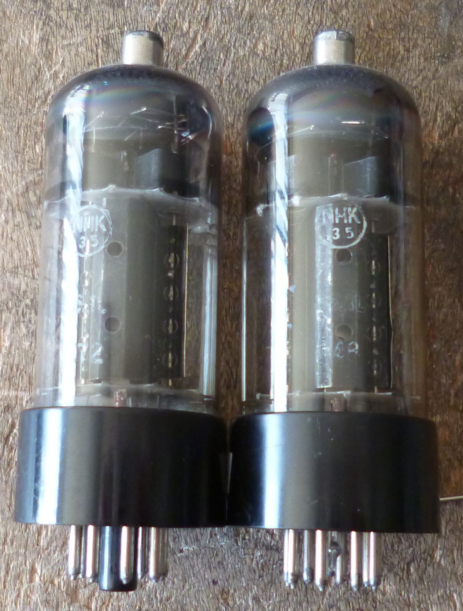
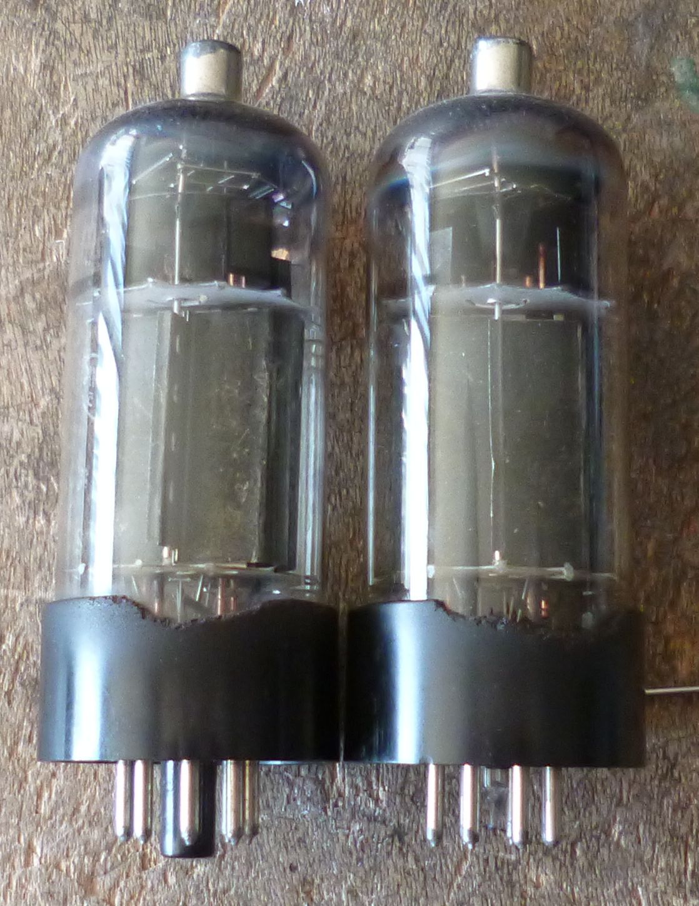
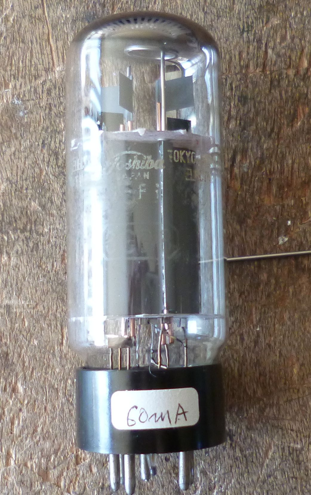
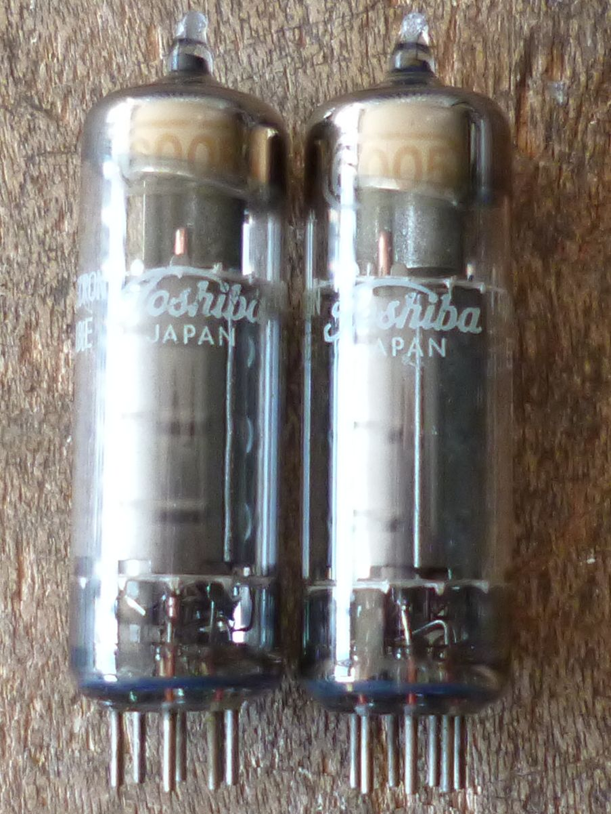
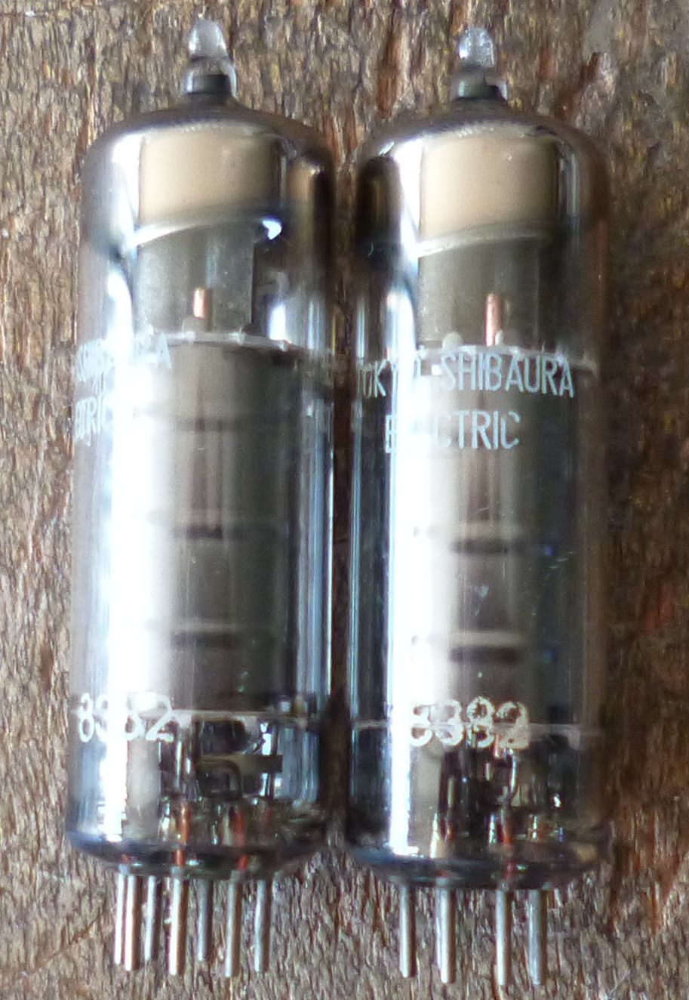

劣化した球の面倒の見方について
私も以前仕事で通信機のメインテナンスをしていた頃は、不慮の故障を防ぐために、真空管はどんどん取り替えて
いました。仕事ですからそれでよかったのです。最近になって、真空管を今度は趣味で扱いようになったのですが、
完全に趣味ですから真空管自体を遊びの対象としています。そうなると、美しい真空管だけではなく、少々調子の悪く
なった真空管がかなり興味をそそるようになります。
今週であった例は、少しゲッターが薄くなって真空度が低下した6CD6GAです。アンプに挿すとプレートの内部に青いグロー
が見えます。そして自己発振したかのように電流が急に増えました。とりあえず電源を切り、バイアスを変え電流を制限して
再度スイッチを入れました。まだプレートの内部には青いグローが見えますが、動作は安定したので1時間ほど音楽を演奏させ、
その後再び元のバイアスに戻すと、今度は安定に動作します。そのままさらに1時間くらいたつと、グローはかすかになりました。
次の日は最初から問題なく動作し、めでたしめでたし、ということなのですが、この球は火を入れないで長くおくとまた同じ
ことになると思います。6CD6GAは沢山持っているので、捨ててしまえばいいのですけどね。
先週の例は、エミゲンのToshiba6CB5Aです。NHK35のマークもついていて、昭和38年頃JUNKで入手したものです。アマチュア無線で
  
807の代わりに長いこと使って、エミゲンの状態になっていました。その球を6CD6-SGドライブのアンプに挿して見たら、Ik=40mA
でやはりかなり疲れているんだなと思っていました。それで何日か優しい音楽を演奏させていたら、日に日に回復してきて、Ik=50mA
、60mA、ついに70mAになり、回復してしまいました。この球はまた少したった後でテストしてみようと思います。
(16/11/2011現在も、UL接続で快調に動作しています。）
劣化した球の面倒の見方について(その2)
今回の例は、ちょっと元気のないToshiba6GB8です。10本中8本は3結で60mAくらいの電流が流れるのですが、2本だけIk=40mAで、
元気がありません。少し使っていたら元気になるかと思い、1本を何日か動作させてみることにしました。スタート時はIk=38mA、
1時間後Ik=45mA、ここで中断し翌朝Ik=50mA、3時間後Ik=55mA、さらに1時間ご56mA、その後は変わらなくなりました。
もう1本は39mAから半日で60mAに回復しました。

この球は本当に回復したのか、少したった後でまたテストしてみようと思います。
2011/05/20
2週間後に上記の球を測定してみましたが、回復した値が保たれており、問題はないようです。
2011/06/03
劣化した球の面倒の見方について(その3)

(26/11/2011更新）
back to top
back to home page